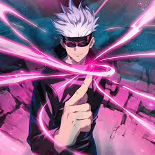

-
Yuji Itadori
Descrição
Yuji é o protagonista da série. Ele é um estudante do ensino médio que acidentalmente engoliu um dos dedos de Ryomen Sukuna, o Rei das Maldições. Apesar de possuído por Sukuna, Yuji consegue conter sua presença maligna. Ele é um dos alunos mais poderosos e talentosos do Jujutsu High, com potencial para superar até mesmo Satoru Gojo.
-
Megumi Fushiguro
Descrição
Megumi é outro protagonista. Diferente de Yuji, ele já nasceu no mundo do jujutsu e entrou para o Jujutsu High aos 15 anos como aluno de Satoru Gojo. Megumi possui muito controle sobre sua energia amaldiçoada e domina a Técnica das Dez Sombras, que lhe permite invocar 10 tipos diferentes de Shikigamis
-
Nobara Kugisaki
Descrição
Nobara é a terceira integrante da turma de calouros do Jujutsu High junto com Yuji e Megumi. Apesar de sua aparência feminina, ela tem uma personalidade agressiva e explosiva. Nobara já demonstrou ser muito poderoso e preparado para enfrentar maldições.
-
Ryomen Sukuna
Descrição
Ryomen Sukuna é conhecido como o Rei das Maldições. Ele foi um feiticeiro maligno na Era de Ouro da Feitiçaria que precisou da união de muitos feiticeiros para ser derrotado. Mesmo morto, sua energia amaldiçoada e seu corpo nunca foram completamente destruídos
-
Maki Zenin

Descrição
Maki é um personagem importante relacionado à história do Clã Zenin de Assassinos. Rejeitada pela família por sua falta de energia amaldiçoada, ela treina no Jujutsu High para se tornar uma feiticeira poderosa. Maki é obstinada e deseja provar sua força
-
Toge Inumaki
Descrição
Toge é um estudante quieto e reservado, mas muito observador e gentil. Ele tem dificuldade de se abrir para os outros e precisa de muito tempo para passar a confiar em alguém. Toge fala um pouco para evitar amarldiçoar alguém acidentalmente com suas palavras encantadas.
-
Panda
Descrição
Panda é um cadáver amaldiçoado de personalidade tranquila. Ele vê os humanos como criaturas estranhas e às vezes apresenta sarcasmo. Em combate, Panda luta com ferocidade, usando toda sua força bruta.
-
Satoru Gojo
Descrição
Satoru é considerado o feiticeiro mais forte da série, capaz de reter imensas quantidades de energia amaldiçoada. Ele é normalmente visto como indiferente e brincalhão com seus alunos, mas antipático e cruel com inimigos.
-
Kento Nanami

Descrição
Nanami foi aluno do Jujutsu High na mesma época que Gojo e Geto. Ele trabalha como feiticeiro contratado pela escola para resolver problemas de segurança relacionados a maldições. Apesar da calma, Nanami não demora a demonstrar eficiência e usa todos os meios para cumprir seu trabalho.